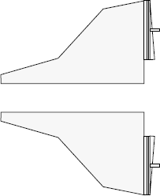

The wing is an aerodynamic lifting surface that provides conventional lift and
control for the spaceship.
Both wings are made up of many parts. Details on the specific
wing configuration can be found in the parts catalog included with your customized
vehicle.Figure 1. Wing assembly
